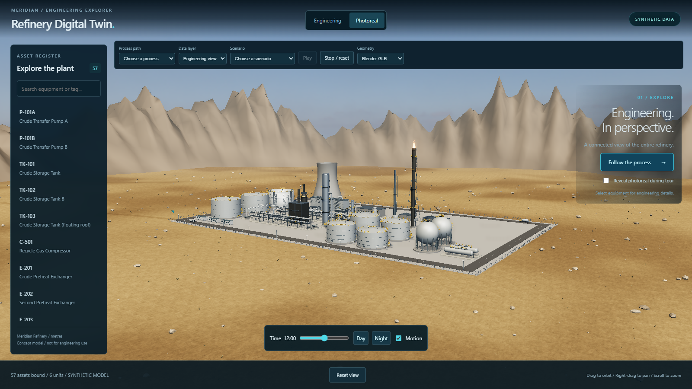
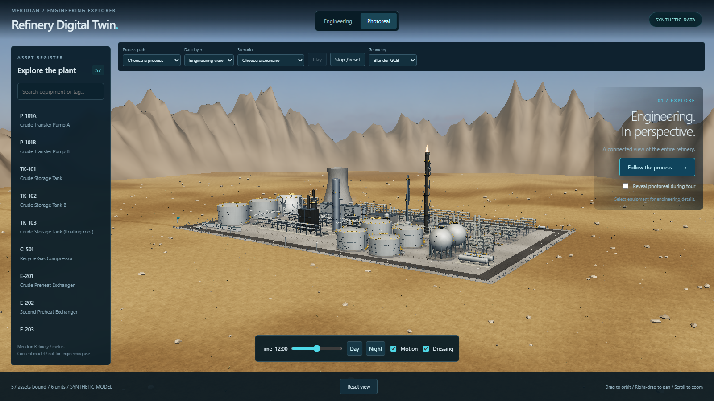
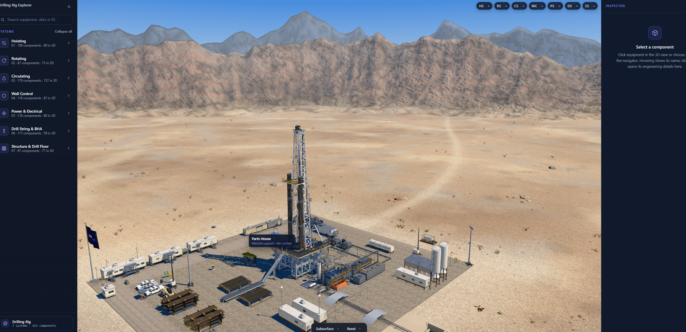

CAM-6 vertical slice reviewStage C Task 2 — CAM-6, photoreal day
Left: approved Task 1 before. Centre: slice candidate. Right: supplied PetroMind wide reference.
Scene captures: 1600 × 900, same CAM-6 and noon preset. Reference retains its original aspect ratio. No crop, recolouring or generative enhancement. Reviewers judge the visual result.
Before — Task 1
After — Task 2 candidate
PetroMind wide — supplied reference